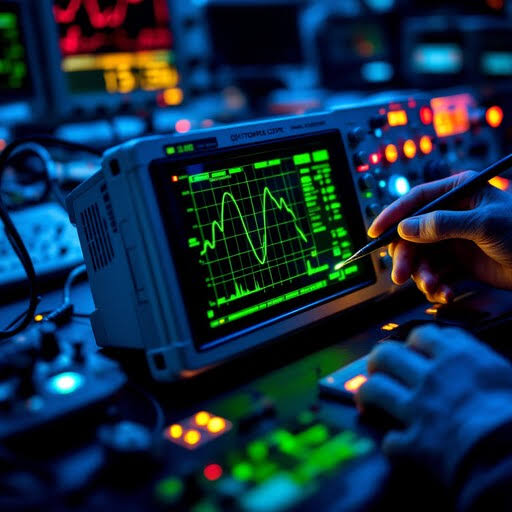
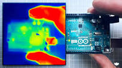

Hardware is a Living Ecosystem.
A laptop or custom PC is not just a collection of isolated parts. It is a highly integrated, symbiotic ecosystem where power, data, and thermal energy flow in delicate balance. At Lapoworld, our diagnostic methodology is built on understanding these deep interconnects.
1. The Logic Board as a Metropolis
To the untrained eye, a motherboard is a flat piece of fiberglass covered in silicon. To the engineers at Lapoworld, it is a bustling metropolis. The CPU acts as the central government, but it relies entirely on a vast infrastructure of data buses (like I2C, SPI, and PCIe) and power rails to communicate with the rest of the system. If the 3.3V sensor rail drops due to a shorted capacitor, the entire system might refuse to boot to protect itself.
Standard technicians often misdiagnose issues because they look at symptoms in isolation. If a keyboard stops working, they replace the keyboard. However, in many modern architectures, the keyboard communicates via the SPI bus directly to the SMC (System Management Controller) or EC (Embedded Controller). If a liquid spill damaged a pull-up resistor on that data line, a new keyboard will not solve the issue. Our ecosystem approach means tracing the schematic from the physical peripheral all the way back to the controller chip.
2. Power Sequencing and The Ripple Effect
Devices do not simply "turn on." When you press the power button, a highly orchestrated sequence of events occurs in milliseconds, known as Power Sequencing. The battery management system (BMS) negotiates voltage, the 3.42V G3Hot rail establishes standby power, and buck converters step down the 19V/20V main input to precisely 1.05V for the PCH (Platform Controller Hub) and CPU VCORE.
If any step in this sequence fails, the chain breaks. This is why a failing battery can cause your trackpad to stop clicking (due to physical swelling pressing against the chassis), or why a faulty USB-C charging IC can prevent the device from outputting display data. By understanding the ecosystem, Lapoworld technicians use oscilloscopes to measure the ripple voltage and timing of these sequences, finding the exact broken link in the chain.

3. The Display Pipeline: From GPU to Pixel
The journey of a pixel from software code to physical light involves multiple subsystems working in harmony. The GPU renders the frame and pushes it through the Embedded DisplayPort (eDP) lanes. Simultaneously, the backlight driver circuit boosts a 12V input up to 35V-50V to power the LED array behind the LCD panel.
A common failure in this ecosystem is the "Black Screen of Death" where the laptop turns on, fans spin, but there is no image. Standard shops will immediately quote you for a new display panel. Lapoworld, however, tests the ecosystem. By shining a flashlight through the Apple logo or back of the screen, we often discover the LCD is functioning perfectly, but the high-voltage backlight fuse on the motherboard has blown due to a short in the hinge cable. Fixing the fuse costs a fraction of replacing a perfectly good Retina display.
4. Thermal Synergy: Heat and Memory Degradation
Thermal dynamics are deeply tied to storage health—a fact often overlooked. NVMe SSDs are incredibly fast, but they generate massive localized heat at the controller chip. If a laptop's cooling fans are clogged, ambient internal chassis temperature rises. This ambient heat saturates the SSD.
NAND flash memory degrades exponentially faster when operating above 70°C. Data retention drops, and the controller is forced to perform aggressive thermal throttling, slowing your system to a crawl. A client may come to us complaining about a "slow hard drive," but our ecosystem diagnostic reveals the true culprit: dried out CPU thermal paste causing chassis heat saturation. By fixing the thermals, we instantly restore the drive's read/write speeds and prevent catastrophic data loss.

Ecosystem Diagnostics in Action
Real-world examples of how understanding the whole machine saves devices from the scrapyard.